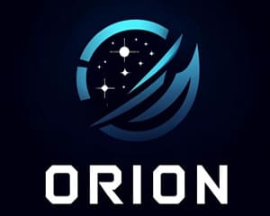

NOTÍCIA DO DIA

Nova plataforma de streaming de jogos chega para revolucionar o mercado!
O mercado de streaming de jogos acaba de ganhar um novo e empolgante concorrente. Orion, uma plataforma inovadora que promete transformar a forma como você acessa e descobre seus jogos favoritos.Após meses de desenvolvimento e teste, o site de streaming Orion, está oficialmente no ar, oferecendo uma experiência única para jogadores casuais e entusiastas.
Leia mais